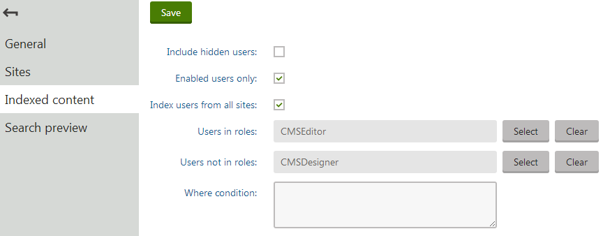

Defining user indexes
When editing user indexes on the Indexed content tab in the Smart search application, you can limit which users are indexed.
Note: The specialized user indexes described on this page are only available as locally stored indexes. If using the Azure Search, you can create indexes of the General type that cover user data.
You can set the following limitations for user indexes:
Include hidden users – if enabled, hidden users will be indexed.
Enabled users only – if enabled, only enabled users will be indexed.
Index users from all sites – if enabled, users from all sites will be indexed. If disabled, only users from the sites assigned on the Sites tab will be indexed.
Users in roles – if entered, only users from the entered roles will be indexed.
Users not in roles – if entered, only users who are not in the entered roles will be indexed.
Where condition – sets the WHERE clause of the queries that the search runs against the View_CMS_User view when building the index. Allows you to create custom conditions for limiting which users are indexed.

Editing a user index - defining the content
Configuring search settings for user fields
You can configure exactly how the system searches through the data fields of user objects, and how the information appears in the search results. We recommend indexing only necessary fields to keep your indexes as small (and fast) as possible.
To edit the field search settings for users:
Open the Modules application.
Edit (
 ) the Membership module.
) the Membership module.Open the Classes tab.
Edit the User class.
Select the Search tab.
Click Customize.
The options in the top part of the tab allow you to configure how the system displays users in search results. Note that the final appearance of the search results always depends on the used search result transformation.
Title field – select the field whose value is used for the title of search results.
Content field – the field whose value is used for the content extract of search results.
Date field – the field whose value is used for the date and time displayed in search results.
Note: You cannot change the image field for users. The search results use Avatar images for this purpose.
The grid in the bottom section of the tab determines how the smart search indexes the user fields. The list contains fields from both the User and User - Settings classes.
For locally stored search indexes, only the options under the Local and General sections of the grid apply. You can set the following search options for individual fields:
|
Content |
If selected, the content of the field is indexed and searchable in the standard way. Within search indexes, the values of all fields with the Content option enabled are combined into a system field named _content (this field is used to find or filter matching search items, but is NOT suitable for reading and displaying human-readable information such as search result extracts). For the purposes of standard search, Content fields are automatically tokenized by the analyzer of the used search index. |
|
Searchable |
If selected, the field is stored separately within indexes and its content can be searched using expressions in format: <field code name>:<searched phrase> See Smart search syntax for more information about field searches. Fields must be set as Searchable to be usable in Search filters and general search result filtering or ordering conditions (such as the Search condition and Search sort properties of Smart search result web parts). |
|
Tokenized |
Relevant for Searchable fields. Indicates if the content of the field is processed by the analyzer when indexing. This allows the search to find results that match individual tokens (subsets) of the field's value. If disabled, the search only returns items if the full value of the field exactly matches the search expression. If a field has both the Content and Searchable options enabled, the Tokenized option only affects the content used for field searches (content is always automatically tokenized for the purposes of standard search). |
|
Custom search name |
Relevant for Searchable fields. The specified value is used as a substitute for the field code name in <field code name>:<searched phrase> search expressions. Note: If you enter a Custom search name value, the original field name cannot be used. |
After you Save changes of the field settings, you need to Rebuild all user indexes.
The field search settings are shared by all user indexes in the system.